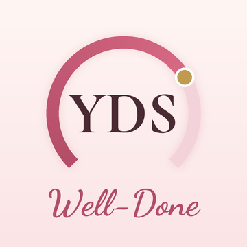

YDS, e-YDS ve YÖKDİL'e hazırlananlar için bir çalışma defteri: kelime, gramer, okuma ve deneme tek yerde, her gün birkaç dakikalık düzenli çalışmaya göre.
Kim hazırladı?
Well-Done'ı İngilizce öğretmeni Kubilay Kenan Işıklı (Kenan Hoca) hazırladı. Sınıfta yıllardır gördüğü ihtiyaçlardan doğdu: kelimeyi unutmadan biriktirmek, soru tiplerini tanımak, sınav gününe kadar ritmi korumak.
Bireysel bir çalışmadır; herhangi bir kurum, yayınevi ya da kursla bağı yoktur.
İçinde ne var?
- 1.388 kelimelik sözlük ve aralıklı tekrar
- 851 özgün soru: tam deneme, mini deneme, bölüm bölüm çalışma
- 56 okuma parçası, cümle cümle Türkçesiyle
- 14 gramer konusu, her biri örnek cümlelerle
- 88 bağlaç ve 105 edat kalıbı
- 148 düzenli ve düzensiz fiil: Tohum, Filiz, Çınar
- 428 kelimelik düello havuzu
- 31 sınavlık ÖSYM takvimi ve puan hesabı
Sorular nereden geliyor?
Sorular, okuma parçaları, çeviriler ve örnek cümleler Well-Done için özgün olarak yazıldı. ÖSYM'nin soru biçimi ve zorluk düzeyi örnek alındı; hiçbir kitaptan ya da yayından soru, metin veya çeviri alınmadı.
Puan eşikleri ve sınav takvimi, ÖSYM'nin ve kurumların kamuya açık duyurularından derlenir.
Bağımsızlık notu
Well-Done; ÖSYM, YÖK ya da herhangi bir kamu kurumuyla bağlantılı değildir, onlar adına konuşmaz. YDS, e-YDS ve YÖKDİL adları yalnız sınavları tanımlamak için geçer. Başvuru, sınav günü ve sonuçlar için her zaman osym.gov.tr esas alınmalıdır.